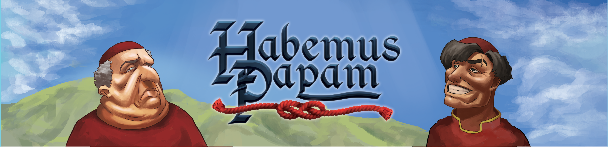

Habemus Papam
Description
Thomas Boutaric - Game Artist
Thomas Depraz-Depland - Game Designer
Yanis Habib - Game Artist
Antoine Leroux - Game Designer
Edouard Murat - Game Designer
Aliénor Tignon - Game Artist
Context
Habemus Papam was my first game project at Rubika Supinfogame. We had to create an original board game. We were free to choose the theme and design any mechanics we wanted to. Our group was composed of 3 game designers and 3 game artists. The project lasted 8 months.
Context
Habemus Papam is a board game where you play as a Cardinal trying to become the Pope during the 1492 Conclave. The game is all about managing your influence and getting other Cardinals to vote for you at the end of the Conclave.
My Work
As a game designer on this project, I helped design the game mechanics, finding interesting card effects, playtesting and balancing the game. Also I was in charge of the prototyping of the game, meaning that with every new iteration of the gameplay or the graphics I had to create a new prototype, a new set of cards etc...
Conclusion
This was a very ambitious first project from my point of you, we had to take care of many aspects of a game production I didn’t know about like printing etc… It had a lot of fun working with my team and we are very proud of the result. I think the game still deserves some balancing and more playtesting but overall I think it’s a great first board game.